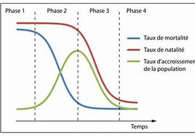

Paragraphe : Malgré cela, dans les pays en voie de développement, le taux de mortalité lié à ces problèmes est descendu de 1,5/1000 individus en 1950 à 0,4 aujourd'hui. Ce taux devrait baisser à 0,2/1000 en 2050. Cela étant, les chiffres restent encore élevés : environ 1,7 million de décès par an en 2050,... La réduction de la mortalité infantile est à ce jour la plus grande avancée de la santé mondiale.
En 1970, le taux de vaccination infantile contre la rougeole, la coqueluche et la polio n'atteignait pas plus de 5%. Ce taux est monté à 85% en 2000, avec 3 millions de vies sauvées par an. Et bien que le taux de mortalité infantile reste encore élevé en Afrique sub-saharienne, en 2008 il représentait un tiers du niveau de Liverpool en 1870, et cela bien que Liverpool était plus riche à cette époque que l'Afrique ne l'est aujourd'hui. Globalement, la mortalité infantile sera réduite de 50% d'ici 2050.